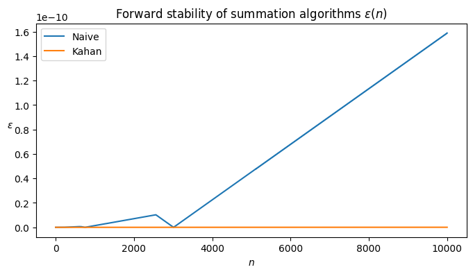

0.1+0.20.300000000000000040.1+0.20.300000000000000040.4+0.50.9Фиксированная и плавающая точка, векторные нормы и понятие устойчивости алгоритмов.
0.1 + 0.2 != 0.3?Числа с плавающей запятой в Python хранятся в формате IEEE 754, который использует бинарное представление чисел. Однако не все десятичные дроби можно точно представить в двоичной системе. Например:
Десятичное 0.1 в двоичном формате представляется бесконечной дробью:
0.0001100110011001100110011001100110011... (повторяется бесконечно)То же самое касается 0.2:
0.001100110011001100110011001100110011... (тоже бесконечная дробь)Так как компьютер работает с ограниченной точностью, он усекает эти дроби, оставляя только конечное число битов. Это приводит к небольшим ошибкам округления.
Если вывести точное двоичное представление 0.1, 0.2 и 0.3, можно увидеть разницу:
from decimal import Decimal
print(Decimal(0.1)) # 0.1000000000000000055511151231257827021181583404541015625
print(Decimal(0.2)) # 0.200000000000000011102230246251565404236316680908203125
print(Decimal(0.3)) # 0.2999999999999999888977697537484345957636833190917968750.1000000000000000055511151231257827021181583404541015625
0.200000000000000011102230246251565404236316680908203125
0.299999999999999988897769753748434595763683319091796875Теперь сложим 0.1 + 0.2:
print(Decimal(0.1) + Decimal(0.2)) 0.3000000000000000166533453694А 0.3 на самом деле:
print(Decimal(0.3)) 0.299999999999999988897769753748434595763683319091796875Они не равны из-за разницы в последних разрядах!
Поскольку числа с плавающей запятой содержат небольшие ошибки округления, их нельзя сравнивать напрямую с ==. Вместо этого используют погрешность (epsilon):
(0.1+0.2)==0.3Falseimport math
a = 0.1 + 0.2
b = 0.3
print(math.isclose(a, b, rel_tol=1e-9)) TrueФункция math.isclose() проверяет, находятся ли два числа достаточно близко друг к другу с учетом заданной относительной ошибки.
Число с фиксированной точкой состоит из 1-битного знака, m-битного целого и n-битного дробного числа: \text{decimal} = (-1)^{\text{sign}} \times \Big( \sum_{i=0}^{m-1} \text{integer}[i] \cdot base^{m-1-i} + \sum_{i=0}^{n-1} \text{fractional}[i] \cdot base^{-i-1} \Big)
def binary_fixed_point_to_decimal(x, m=8, n=8):
"""
x - binary string of size 1 + m + n
m - size of an integer part
n - sze of a fractional part
"""
sign_part, integer_part, fractional_part = x[0], x[1:m+1], x[m+1:m+n+1]
sign_value = (-1) ** int(sign_part)
integer_value = sum([
int(v) * 2 ** i
for i, v in enumerate(integer_part[::-1])
])
fractional_value = sum([
int(v) * 2 ** -(i + 1)
for i, v in enumerate(fractional_part)
])
return sign_value * (integer_value + fractional_value)
m, n = 8, 8
x = '00000010100100000'
print(binary_fixed_point_to_decimal(x, m, n) == 5.125)Truex = '11111111111111111' # Insert a string corresponding to a minimal possible value
print(binary_fixed_point_to_decimal(x, m, n) == -(2 ** m - 2 ** (-n)))Truex = '01111111111111111' # Insert a string corresponding to a maximal possible value
print(binary_fixed_point_to_decimal(x, m, n) == 2 ** m - 2 ** (-n))Truex = '00000000000000001' # Insert a string corresponding to an absolute minimal but nonzero possible value
print(binary_fixed_point_to_decimal(x, m, n) == 2 ** (-n))TrueОсновной недостаток чисел с фиксированной точкой — ограниченный диапазон и разрешение. Например, для 8-битного формата: - диапазон [-128, 127] - разрешение 2^{-7} = 0.0078125
Это означает, что для представления очень больших или очень маленьких чисел потребуется больше бит.
Для 32-битного формата: - диапазон [-2^{31}, 2^{31} - 1] - разрешение 2^{-23} \approx 1.192 \times 10^{-7}
Это означает, что для представления очень больших или очень маленьких чисел потребуется больше бит.
Числа с плавающей точкой состоят из 1-битного знака, m-битного экспоненты и n-битного мантиссы:
\text{decimal} = (-1)^{\text{sign}} \times base^{\Big(\sum_{i=0}^{m-1} \text{exponent}[i] \cdot base^{m-1-i} - (2^{m-1} - 1)\Big)} \times \Big(1 + \sum_{i=0}^{n-1} \text{mantissa}[i] \cdot base^{-i-1}\Big)
Half (float16) vs Single (float32) vs and Double (float32) Точность
def binary_floating_point_to_decimal(x, m=8, n=23):
"""
x - binary string of size 1 + m + n
m - size of an exponent part
n - sze of a mantissa part
"""
sign_part, exponent_part, mantissa_part = x[0], x[1:m+1], x[m+1:n+m+1]
sign_value = (-1) ** int(sign_part)
mantissa_value = 1
for i, v in enumerate(mantissa_part):
mantissa_value += int(v) * (2 ** -(i + 1))
exponent_value = 0
for i, v in enumerate(exponent_part):
exponent_value += int(v) * 2 ** i
exponent_value -= (2 ** (m - 1) - 1)
return sign_value * (2 ** exponent_value) * mantissa_value
m, n = 8, 23
x = '01000000101001000000000000000000'
print(binary_floating_point_to_decimal(x, m, n) == 5.125)TrueИз-за того, что представления с плавающей точкой являются лишь приближениями к действительным числам, могут возникать ошибки округления.
Например, рассмотрим простой алгоритм суммирования, где x_i — числа с плавающей точкой:
f(x) = x_1 + x_2 + ... + x_n
Реализуйте простой алгоритм из лекции (добавляя по одному):
[!] Установите n равным 1000 и все x_i равными 0.1.
total = 0.0
for _ in range(100000):
total += 0.1
print("Expected result: 10000.0")
print(f"Actual result:", total)Expected result: 10000.0
Actual result: 10000.000000018848Реализуйте алгоритм Кахана из лекции и проверьте возникающую ошибку.
[!] Установите n равным 1000 и все x_i равными 0.1.
s = 0
c = 0
for i in range(1000):
y = 0.1 - c
t = s + y
c = (t - s) - y
s = t
print("Expected result: 100.0")
print(f"Actual result:", s)Expected result: 100.0
Actual result: 100.0Объяснение: значение 0.1 не может быть точно представлено в двоичной системе, поэтому оно становится приближением. Когда это приближение добавляется по одному, малые ошибки округления накапливаются, что приводит к конечному результату, немного меньшему, чем 100.0.
В NLA мы обычно работаем не с числами, а с векторами, которые являются просто массивами чисел размера n.
import numpy as np
x = np.array([1, 2, 3, 4, 5])
print(f'Size of the x vector is {len(x)}')
print(f'Type of the vector elements is {type(x[0])}')Size of the x vector is 5
Type of the vector elements is <class 'numpy.int64'>Как видите, этот вектор содержит только целые значения. Теперь преобразуйте их в тип float32.
x = x.astype(np.float32)
print(f'Type of the vector elements is {type(x[0])}')Type of the vector elements is <class 'numpy.float32'>Для измерения малости вектора используется его норма \|x\|.
Самый важный класс норм — p-нормы: \|x\|_p = \Big(\sum_{i=1}^n |x_i|^p\Big)^{1/p} Примеры p-норм: - Манхэттенское расстояние или L_1 норма - когда p=1 - Евклидова норма или L_2 норма - когда p=2 - Бесконечная норма, или норма Чебышева - когда p=+\infty: $ |x|_{} = _i | x_i|$
Посчитайте нормы для вектора x:
Подсказка: используйте np.linalg.norm
print('L1 norm:', np.linalg.norm(x, 1))
print('L2 norm:', np.linalg.norm(x, 2))
print('Chebyshev norm:', np.linalg.norm(x, np.inf))L1 norm: 15.0
L2 norm: 7.4161983
Chebyshev norm: 5.0Единичный диск для p-нормы — это множество точек таких, что \|x\|_p = 1.
Визуализируйте единичный диск для следующих p-норм: p \in (0.25, 0.75, 1.0, 2.0, 5.0, \infty)
Подсказка: y = \pm (1 - |x|^p)^{1/p}
import numpy as np
import matplotlib.pyplot as plt
def unit_disk(p):
x = np.linspace(-1, 1, 201)
y = (1 - np.abs(x) ** p) ** (1 / p)
x = np.hstack([x, x[1:][::-1], x[0]])
y = np.hstack([y, -y[1:][::-1], y[0]])
return x, y
plt.figure(figsize=(4, 4))
plt.axis('equal')
for p in (0.25, 0.5, 1.0, 2.0, 5.0, np.inf):
x, y = unit_disk(p)
plt.plot(x, y, label=f'$p$={p}')
plt.legend(loc=1)
plt.show()
Предположим, у нас есть вектор x, функция f(x), и алгоритм \text{alg}(x) для приближения функции. Тогда алгоритм называется устойчивым в прямом направлении, если для некоторого малого \varepsilon
\|\text{alg}(x) - f(x)\| \leq \varepsilon
[Задание] Проверьте суммирующие алгоритмы, упомянутые ранее (простой и Кахана) на устойчивость в прямом направлении.
Пусть x_i = 0.1 и n = 100. f(x) = \sum_{i=1}^{100} x_i, \;\; x_i = 0.1 Запишите ошибку, возникающую в каждом шаге суммирования: \text{error}[i] = |0.1 \cdot i - \text{alg}(x)|
from matplotlib import pyplot as plt
N = 10000
# Naive
total = 0.0
error_naive = []
for i in range(N):
total += 0.1
refer = (i + 1) / 10
error_naive.append(np.abs(refer - total))
# Kahan
s = 0
c = 0
error_kahan = []
for i in range(N):
y = 0.1 - c
t = s + y
c = (t - s) - y
s = t
error_kahan.append(np.abs(c))
plt.figure(figsize=(8, 4))
plt.title(r'Forward stability of summation algorithms $\varepsilon(n)$')
plt.plot(error_naive, label='Naive')
plt.plot(error_kahan, label='Kahan')
plt.ylabel(r'$\varepsilon$', rotation=0)
plt.xlabel(r'$n$')
plt.legend()
plt.show()
What do you see?
Предположим, у вас есть следующее выражение: b = A_1 A_2 A_3 x, где A_1, A_2, A_3 \in \mathbb{R}^{3 \times 3} - случайные квадратные плотные матрицы, а x \in \mathbb{R}^n - вектор. Вам нужно вычислить b. Какой способ лучше всего использовать?
A_1 A_2 A_3 x (слева направо) \left(A_1 \left(A_2 \left(A_3 x\right)\right)\right) (справа налево) Не имеет значения Результаты первых двух вариантов не будут одинаковыми.
import numpy as np
# Function to create a random square matrix of size n
def create_random_matrix(n):
return np.random.rand(n, n)
# Define the size of the matrices
n = 200
# Create a list of 3 random matrices
matrices = [create_random_matrix(n) for _ in range(3)]
y = np.random.rand(n, 1) # y is a vector
# Function to compute the expression in a given order
def compute_expression(matrices, y, reverse=False):
result = y
if reverse:
# Start with y and multiply with each matrix from right to left
for matrix in reversed(matrices):
result = matrix @ result
else:
# Start with the first matrix and multiply each next matrix from left to right
result = matrices[0]
for matrix in matrices[1:]:
result = result @ matrix
# Finally multiply with y
result = result @ y
return result
# Time the expression from left to right
print("üíé From left to right")
%timeit compute_expression(matrices, y)
# Time the expression from right to left
print("üíé From right to left")
%timeit compute_expression(matrices, y, reverse=True)üíé From left to right
2.23 ms ± 636 µs per loop (mean ± std. dev. of 7 runs, 100 loops each)
üíé From right to left
56.3 µs ± 3.95 µs per loop (mean ± std. dev. of 7 runs, 10,000 loops each)